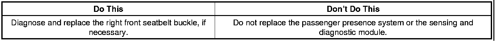
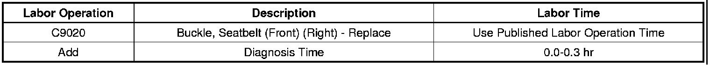

Restraints - Airbag Light On DTC B0071 And B0081 Set
TECHNICALBulletin No.: 07-09-41-010D
Date: May 03, 2010
Subject: Airbag Light On, DTC B0071 and B0081 Set (Diagnose and Replace Right Front Seatbelt Buckle, If Necessary)
Models:
2006-2010 Buick Lucerne
2006-2010 Cadillac DTS
2007-2010 Cadillac Escalade, Escalade ESV, Escalade EXT
2006-2007 Chevrolet Monte Carlo
2006-2008 Chevrolet Impala
2007-2010 Chevrolet Avalanche, Colorado, Silverado LD, Suburban, Tahoe
2007-2010 GMC Canyon, Sierra LD, Yukon, Yukon Denali, Yukon XL, Yukon Denali XL
2006-2010 HUMMER H3
2009-2010 HUMMER H3T
Supercede:
This bulletin is being revised to update the model years. Please discard Corporate Bulletin Number 07-09-41-010C (Section 09 - Restraints).
Condition
Some customers may comment on the airbag light being illuminated. Upon investigation, the technician may find DTC B0071 set in the passenger presence system (PPS) and a DTC B0081 in the sensing and diagnostics module (SDM).
Correction

Verify proper system electrical connections. Inspect the passenger seat belt tension sensor signal, voltage reference and low reference circuits, carefully for cutting and/or chaffing per SI instructions for DTC B0071. If all checks have been made and no fault has been found, replace the belt tension sensor.
Important
The seat belt tension sensor is not serviced separately. The seat belt buckle with the tension sensor must be serviced as a complete unit.
Parts Information
For part number and usage of seatbelt buckles, refer to Group 14.875 (cars) or Group 16.714 (trucks) of the appropriate parts catalog.
Warranty Information

For vehicles repaired under warranty, use the table.

Disclaimer